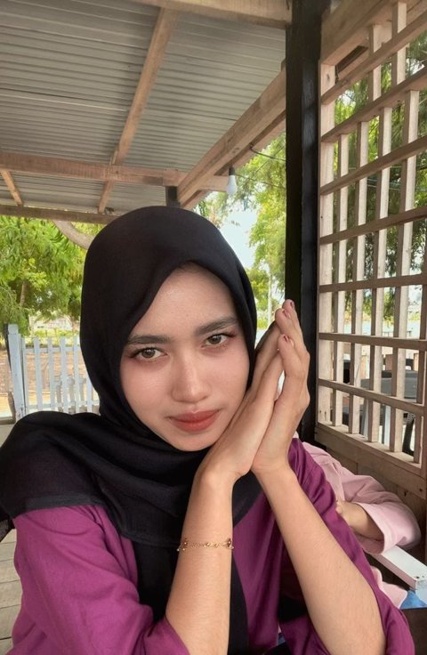

Saya Putri Mulyani, mahasiswa Rekayasa Perangkat Lunak yang senang membangun website dan merancang antarmuka (UI/UX) yang rapi dan mudah digunakan.

"Tantangan terbesar saya adalah menemukan dan memperbaiki error pada program — dan proses itu justru membuat saya terbiasa berpikir runtut sebagai developer." Saya sedang menempuh studi Rekayasa Perangkat Lunak dan mulai serius membangun website sejak mengikuti mata kuliah RPL.
Rekayasa Perangkat Lunak — fokus web & UI/UX.
Jurusan IPA — mulai tertarik pada logika.
Fondasi pendidikan menengah pertama.
Struktur halaman web
Tampilan visual website
Logika back-end sederhana
Desain UI/UX
Basis data
Simpan & publikasi kode
Website
Website satu halaman yang menampilkan profil, pendidikan, keahlian, dan proyek — dibangun sebagai tugas mata kuliah RPL II.
Aplikasi Web · Basis Data
Pengelolaan data mahasiswa (tambah, lihat, ubah, hapus) yang tersimpan rapi di basis data MySQL.
Desain Antarmuka
Rancangan antarmuka aplikasi mobile mulai dari layar masuk hingga beranda, didesain di Figma.
Klik "Live Demo" untuk melihat website berjalan langsung, atau "Lihat Kode" untuk membuka source code-nya di GitHub.